FRANCE
MIS QUINCE AÑOS · PARIS
Zaira
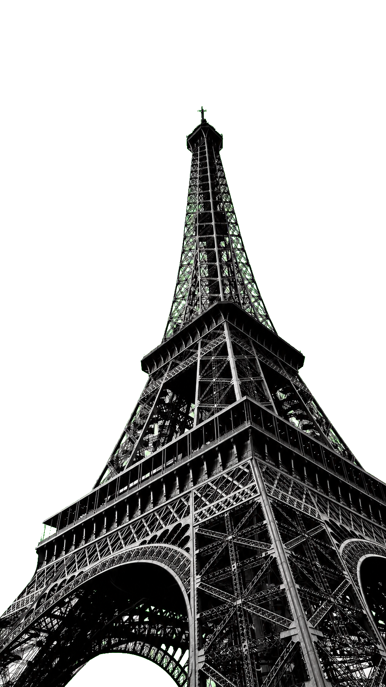
Cada vez falta
menos
La cuenta regresiva ya empezó para una noche única, soñada y llena de momentos hermosos.
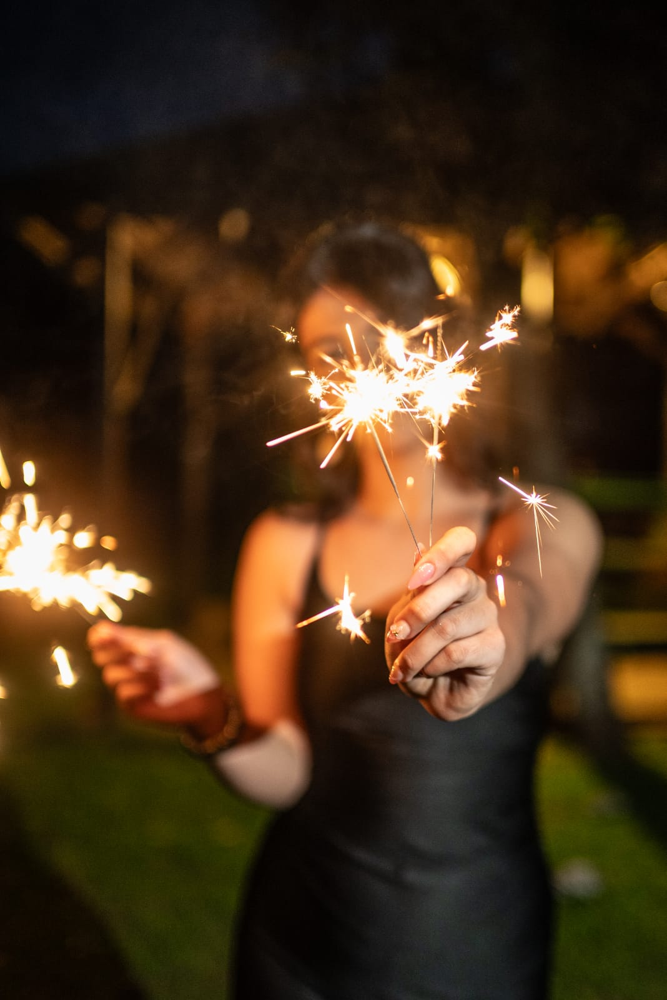
BIENVENIDOS
Qué alegría
que estés acá
Esta noche está hecha para soñar, reír y celebrar juntos cada momento.
Con cariño, Zaira

PRIMER DESTINO
Ceremonia
religiosa
Sábado 25 de julio · 19:00 hs
Catedral de San José

EL GRAN DÍA
2026
21:00 PM — 05:00 AM
Agregar al calendarioDESTINO
Cómo
llegar
Nos encontramos en Aratei, en Posadas, Misiones. Acá te dejo la ubicación para que llegues súper fácil.
LE DRESS CODE
Dress
Code
ELEGANTE · FORMAL
NOCHE DE PREMIOS
Bloom Award
Durante la noche se habilitarán votaciones para reconocer a quienes hacen esta fiesta todavía más especial.
Las ternas de la noche:
Al final de la noche vamos a conocer a las personas ganadoras.
Prepará tu voto, porque esta noche todos participan.
MÚSICA
Poné play
Dale play a esta selección y empezá a sentir la vibra de una noche única.
Escuchar en SpotifyLA RED SOCIAL DEL EVENTO
BloomKeep
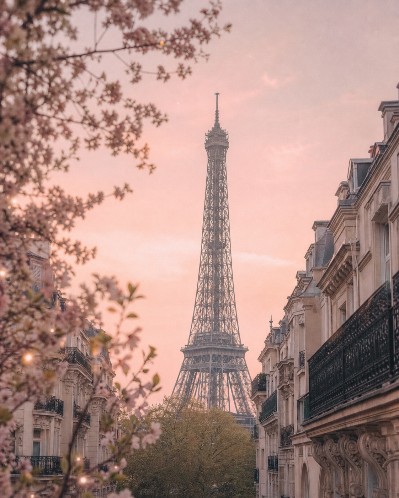
une nuit à paris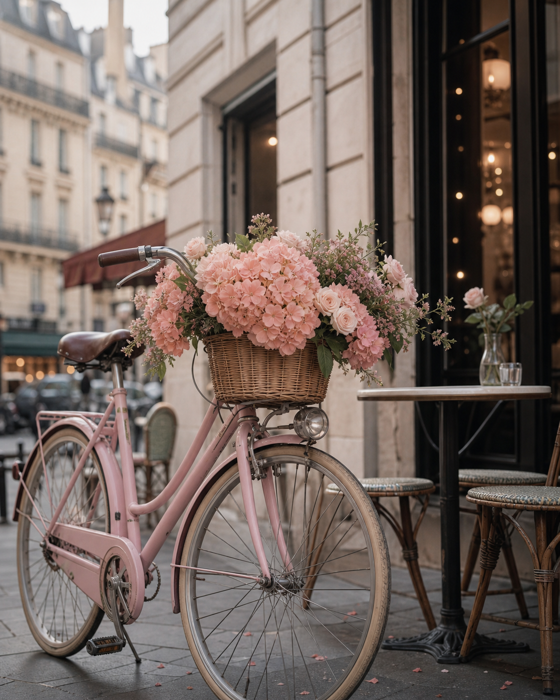
zaira · 01.08.26MAGIC
Las fotos y los momentos más lindos de la noche, reunidos en un solo lugar para volver a vivirlos cuando quieras.
Descubrir BloomKeepEL BOOK DE ZAIRA
Galería de
fotos
Una selección de fotos para guardar los momentos más lindos de esta etapa tan especial.
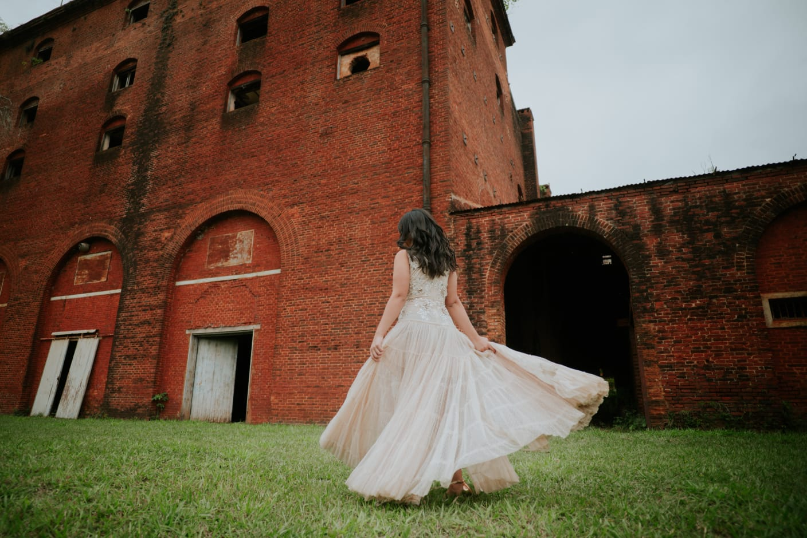
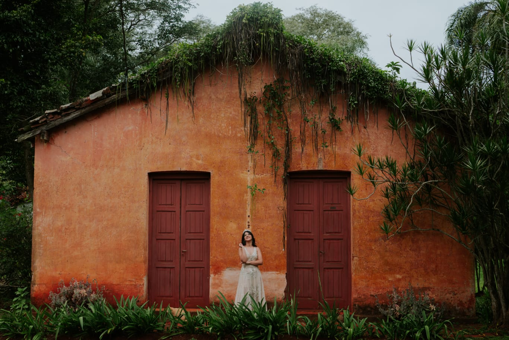
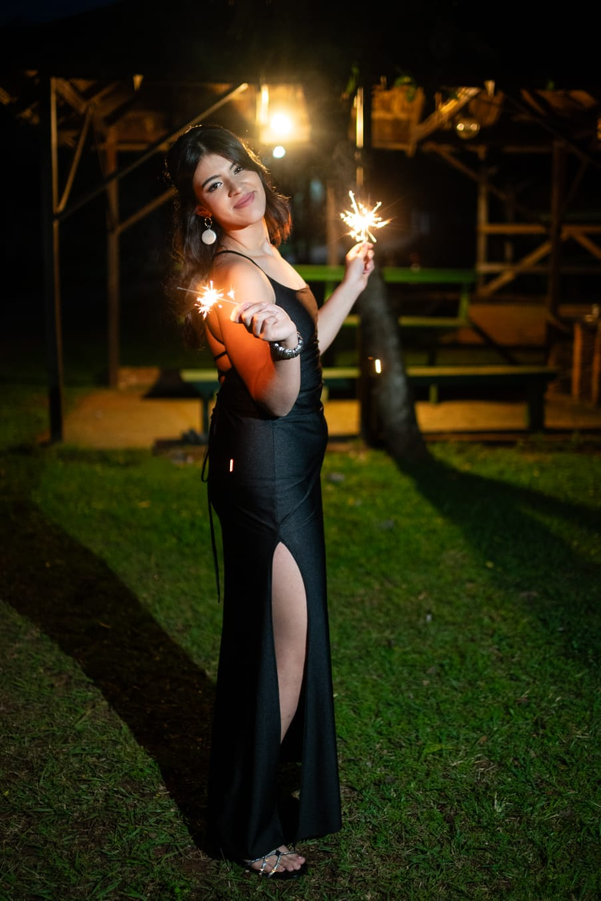
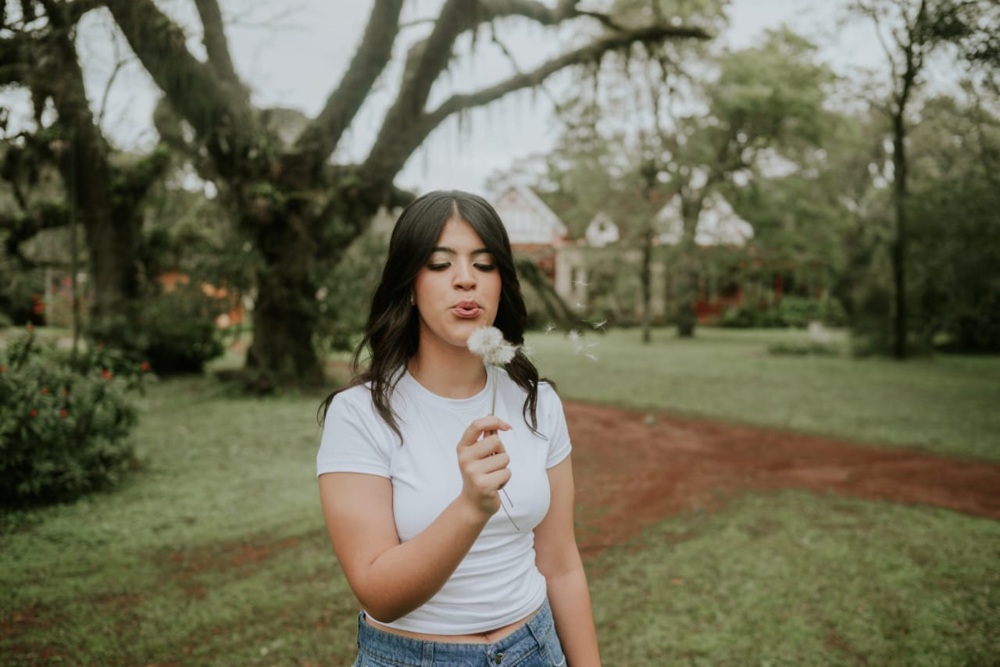
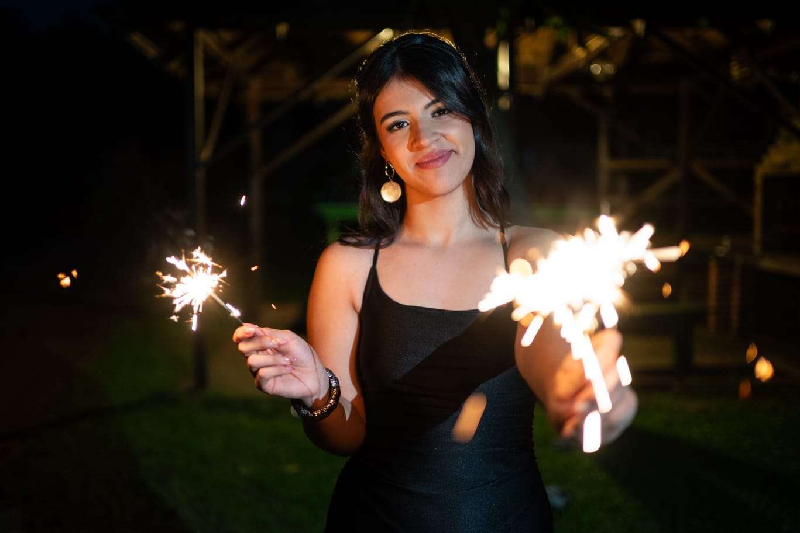
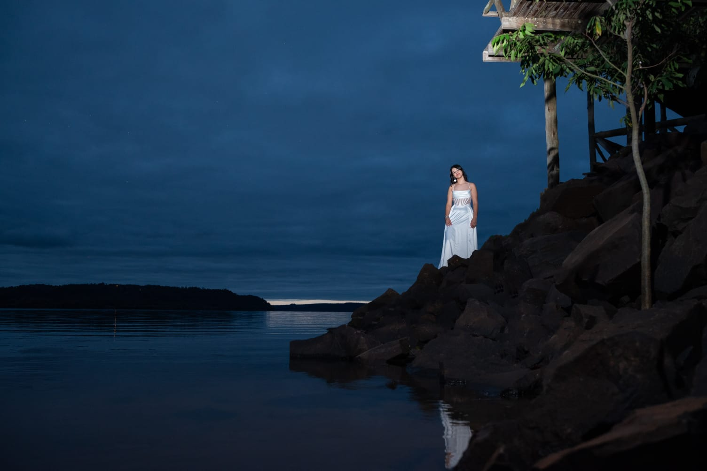
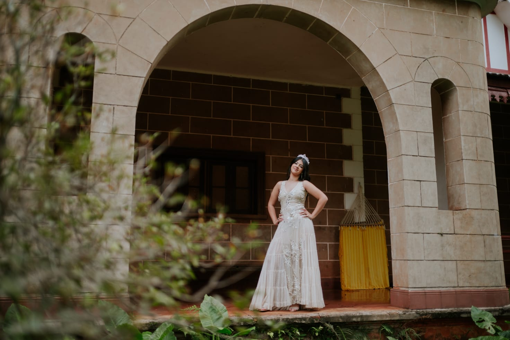
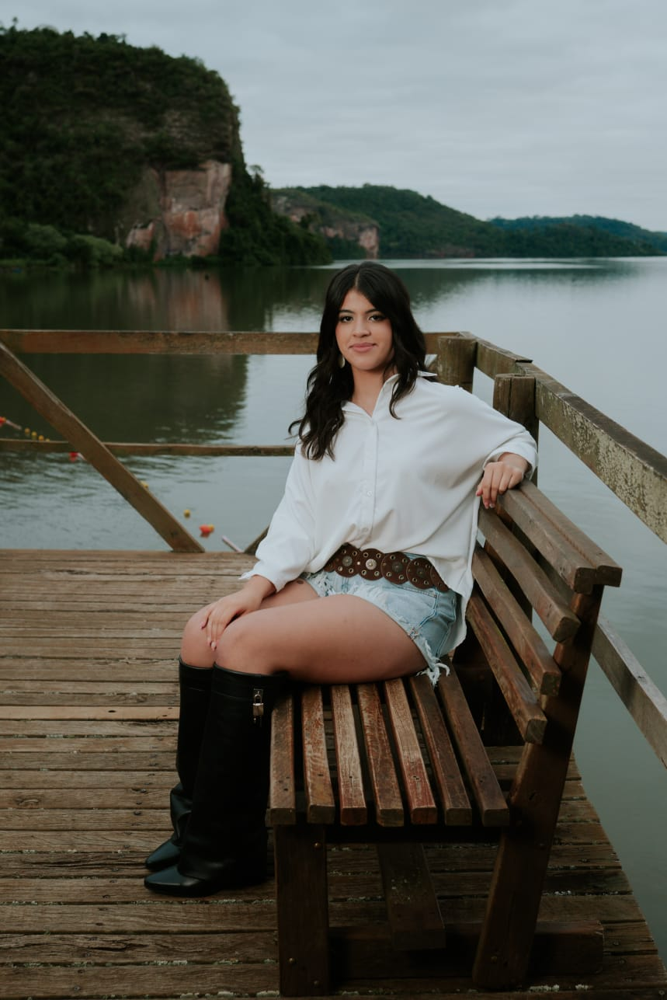
Regalos
Tu presencia en esta noche tan especial es lo más importante para mí. Pero si además querés hacerme un regalo, acá vas a encontrar la información.
RSVP
Confirmá tu
asistencia
Tu respuesta es muy importante para compartir esta noche tan especial.
Confirmar asistencia